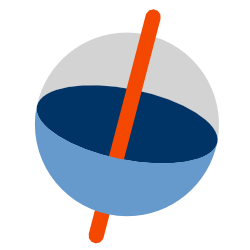
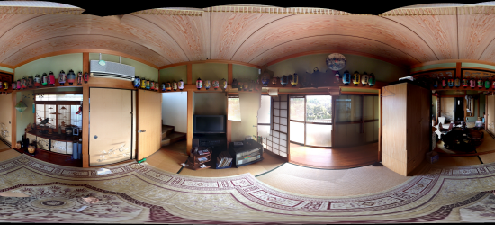
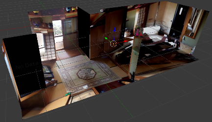

 (ふぁい)
360°画像から数分でそれっぽい3Dモデルを作るツールです。作成したモデルは.obj/.mtl/.pngのzipとしてダウンロードできます。

360°画像

テクスチャ付き.obj
使ってみる (r1)
注意
- 作れるのは直角に曲がった壁と天井+床だけです。
- 屋外でも動きますが歪みが激しいです。
- 撮影した高さは1mぐらいでないとうまく動きません。
- 写真は公開されませんが、(念の為)重要なものは映らないようにしてください。
- WebGL / File API / Web Workersなどの動くモダンなブラウザを使用してください。